11 The Chemical Bond in Diatomic Molecules
In this chapter we will see a couple of examples of how the concept and mathematics of quantum mechanics can be applied to understand the chemical bond in molecules. We will start from the simplest molecule, the \(\mathrm{H}_2^+\) molecular ion, we will then move on to the simplest two-electron bond in the hydrogen molecule, and finally we will use the same ideas to understand the bonds in the diatomic molecules of the second row, such as \(\mathrm{N}_2\) and \(\mathrm{O}_2\). To simplify the notation in this chapter, we will move away from SI units and use a set tailored for molecules, called atomic units (a.u.). This set of units is built by setting \(\hbar=e=m_e=4\pi\varepsilon_0=1\), which also makes the Bohr radius, \(a_0\), the unit of length. As an example of the simplification that a.u. allows, the energy eigenvalues of the hydrogen atom, eq. (5.8), simply become \(E_n=-\frac{1}{2n^2}\) in the a.u. of energy, which is called the hartree, \(E_h\). Since chemists usually prefer other energy units, we will report the most important results in kJ/mol as well, using:
\[\begin{equation} 1\,E_h = 27.211\text{ eV} = 2{,}625.5\text{ kJ/mol}, \qquad 1\,a_0 = 0.529\,\text{Å}. \tag{11.1} \end{equation}\]
11.1 The Chemical Bond in the Hydrogen Molecular Cation
This system has only one electron, but since its geometry is not spherical (figure 11.1), the TISEq cannot be solved analytically as for the hydrogen atom.
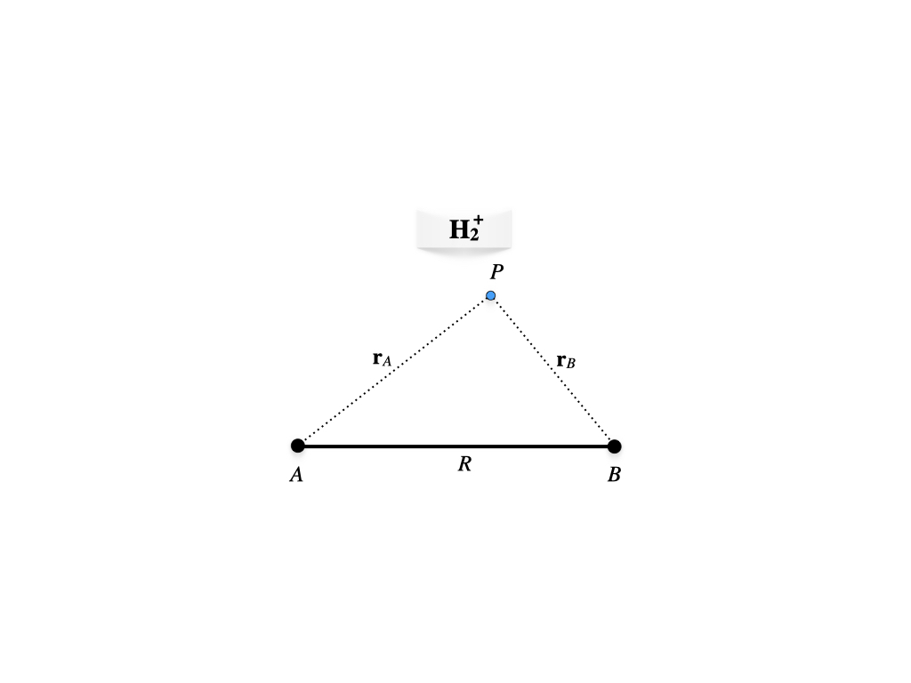
Figure 11.1: Geometry of the hydrogen molecular cation.
The electron is at point \(P\), while the two protons are at positions \(A\) and \(B\) at a fixed distance \(R\). Using the Born-Oppenheimer approximation we can write the one-electron molecular Hamiltonian in a.u. as:
\[\begin{equation} \hat{H} = \hat{H}_e+\frac{1}{R} = \left( -\frac{1}{2}\nabla^2-\frac{1}{r_A}-\frac{1}{r_B} \right)+\frac{1}{R} \tag{11.2} \end{equation}\]
As a first approximation to the variational wave function, we can build the one-electron molecular orbital (MO) by linearly combining two \(1s\) hydrogenic orbitals centered at \(A\) and \(B\), respectively:
\[\begin{equation} \varphi = c_1 a + c_2 b, \tag{11.3} \end{equation}\]
with:
\[\begin{equation} \begin{aligned} a &= 1s_A = \left( \psi_{100} \right)_A\\ b &= 1s_B = \left( \psi_{100} \right)_B. \end{aligned} \tag{11.4} \end{equation}\]
Using eq. (10.12) and considering that the nuclei are identical, we can define the integrals \(H_{aa}=H_{bb}, H_{ab}=H_{ba}\) and \(S_{ab}=S\) (while \(S_{aa}=1\) because the hydrogen atom orbitals are normalized). The integral \(H_{aa}\) is called the Coulomb integral, and it is the energy of an electron described by orbital \(a\), including its attraction to the second nucleus, \(B\). The integral \(H_{ab}\) is called the resonance integral (or exchange integral), and it has no classical counterpart: it describes the energy associated with the electron being shared between the two centers. It is negative, and it is responsible for the bond. The secular equation, eq. (10.14), can then be written:
\[\begin{equation} \begin{vmatrix} H_{aa}-E & H_{ab}-ES \\ H_{ab}-ES & H_{aa}-E \end{vmatrix}=0 \tag{11.5} \end{equation}\]
The expansion of the determinant results in:
\[\begin{equation} \begin{aligned} (H_{aa}-E)^2 &=(H_{ab}-ES)^2 \\ H_{aa}-E &= \pm (H_{ab}-ES), \\ \end{aligned} \tag{11.6} \end{equation}\]
with roots:
\[\begin{equation} \begin{aligned} E_{+} &= \frac{H_{aa}+H_{ab}}{1+S} = H_{aa}+\frac{H_{ba}-SH_{aa}}{1+S}, \\ E_{-} &= \frac{H_{aa}-H_{ab}}{1-S} = H_{aa}-\frac{H_{ba}-SH_{aa}}{1-S}, \end{aligned} \tag{11.7} \end{equation}\]
the first corresponding to the ground state, the second to the first excited state. Solving for the best value for the coefficients of the linear combination for the ground state \(E_{+}\), we obtain:
\[\begin{equation} c_1=c_2=\frac{1}{\sqrt{2+2S}}, \tag{11.8} \end{equation}\]
which gives the bonding MO:
\[\begin{equation} \varphi_{+}=\frac{a+b}{\sqrt{2+2S}}. \tag{11.9} \end{equation}\]
Proceeding similarly for the excited state, we obtain:
\[\begin{equation} c_1=\frac{1}{\sqrt{2-2S}}\;\quad c_2=-\frac{1}{\sqrt{2-2S}}, \tag{11.10} \end{equation}\]
which gives the antibonding MO:
\[\begin{equation} \varphi_{-}=\frac{a-b}{\sqrt{2-2S}}. \tag{11.11} \end{equation}\]
These results can be summarized in the molecular orbital diagram of figure 11.2. We notice that the splitting of the doubly degenerate atomic level under the interaction is non-symmetric for \(S\neq0\), the antibonding level being pushed up more than the bonding level is pushed down, compared with the symmetric case that would occur for \(S = 0\).
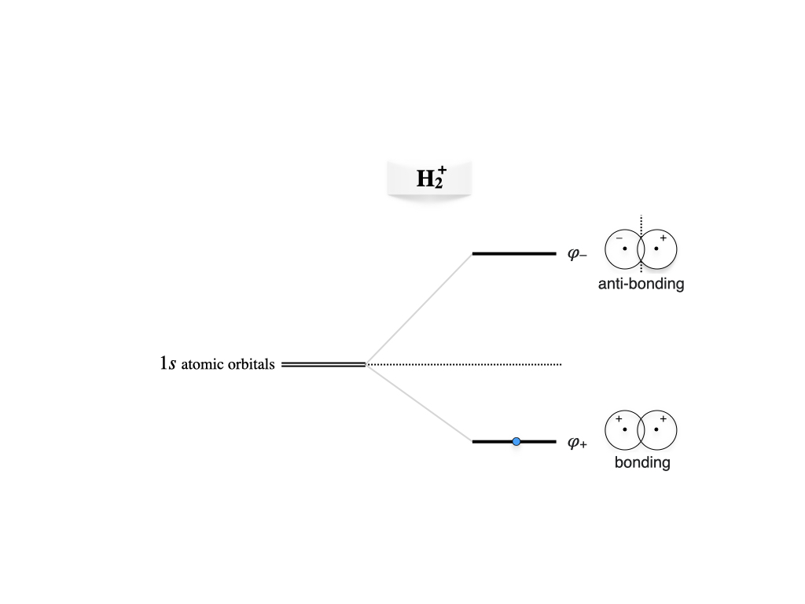
Figure 11.2: Molecular orbitals diagram for the hydrogen molecular cation.
11.1.1 Wave function analysis
The bonding and antibonding molecular orbitals are plotted in figure 11.3 as color maps in a plane that contains the two nuclei, and in figure 11.4 along the internuclear axis, together with their probability densities.
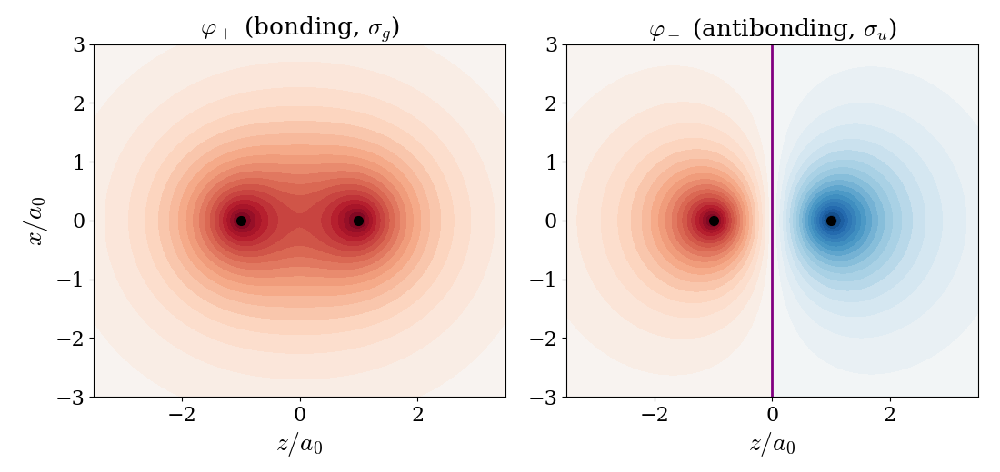
Figure 11.3: Color maps of the bonding (left) and antibonding (right) molecular orbitals of the hydrogen molecular cation at \(R=2\,a_0\), in a plane that contains the two nuclei (black dots). Color scheme: red (positive), blue (negative), white/light (close to zero). The nodal plane of the antibonding orbital is reported in purple.
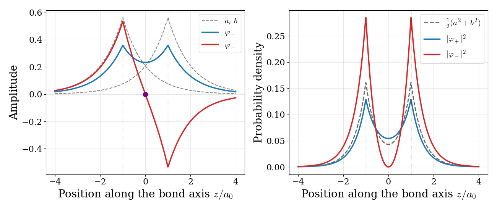
Figure 11.4: Left: the bonding (blue) and antibonding (red) molecular orbitals of the hydrogen molecular cation along the internuclear axis at \(R=2\,a_0\), compared with the two atomic orbitals \(a\) and \(b\) (gray, dashed). The node of the antibonding orbital is reported as a purple dot. Right: the corresponding probability densities, compared with the average density of the two atomic orbitals (gray, dashed). The positions of the nuclei are marked by dotted vertical lines.
A few important considerations can be made by analyzing these plots:
Constructive and destructive interference: the bonding orbital is the sum of the two atomic orbitals, which add up in the region between the nuclei, just like two waves that interfere constructively. The antibonding orbital is their difference, and the two atomic orbitals cancel each other exactly halfway between the nuclei, like two waves that interfere destructively.
Nodes: as for all the systems that we have studied so far, the higher energy state has more nodes. The bonding orbital has no nodes, while the antibonding orbital has a nodal plane perpendicular to the bond axis, where the probability of finding the electron is exactly zero.
Charge accumulation: the probability density of the bonding orbital is larger than the average density of the atomic orbitals in the region between the nuclei, at the expense of the regions close to the nuclei and behind them. An electron in this region is attracted by both nuclei at the same time, and this is the origin of the chemical bond. The antibonding orbital does the opposite: it removes probability from the region between the nuclei, leaving the two protons less shielded from each other.
Symmetry labels: both orbitals are symmetric with respect to rotations around the bond axis, which is why they are called \(\sigma\) orbitals. If we invert any point through the center of the molecule, the bonding orbital stays the same, while the antibonding orbital changes sign. These two behaviors are labeled \(g\) (from the German gerade, even) and \(u\) (ungerade, odd). Therefore, the bonding orbital is called \(\sigma_g\), and the antibonding orbital \(\sigma_u\).
To obtain the energy as a function of the internuclear distance, we need to calculate the values of the integrals, and to repeat the calculation for different distances, \(R\). For \(1s\) orbitals, all the integrals can be calculated analytically. For example, the overlap integral is \(S=e^{-R}\left(1+R+\frac{R^2}{3}\right)\), which goes from \(1\) when the two nuclei coincide to \(0\) when they are far apart. The resulting energies of the two states, measured from the separated fragments (one hydrogen atom and one proton), are plotted in figure 11.5. The energy of the ground state is negative for a wide range of distances, which means that, in this range, the molecule is more stable than the separated fragments. The minimum of the curve is at \(R=2.49\,a_0\) and \(E_+=-0.065\,E_h=-170\text{ kJ/mol}\), which is a reasonable first approximation to the exact values (\(R=2.00\,a_0\) and \(-269\text{ kJ/mol}\)). The excited state, instead, is repulsive at all distances: if the electron is promoted to the antibonding orbital, the molecule falls apart.
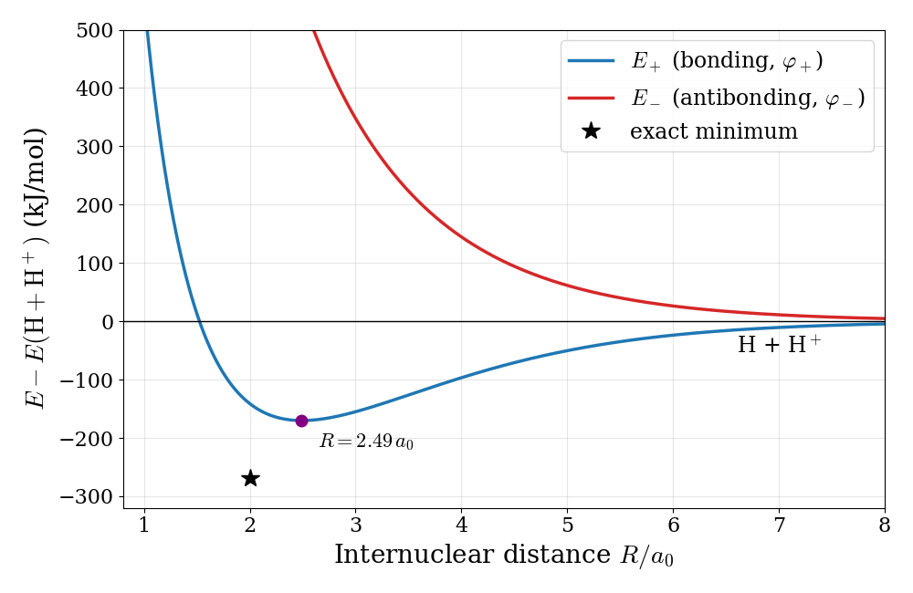
Figure 11.5: Born–Oppenheimer potential energy curves for the ground (bonding) and first excited (antibonding) states of the hydrogen molecular cation, computed with the LCAO wave functions. The purple dot marks the LCAO minimum, and the black star the exact minimum.
11.2 The Chemical Bond in the Hydrogen Molecule
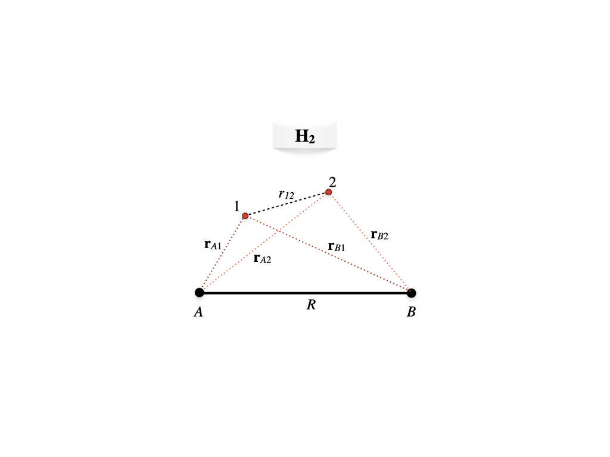
Figure 11.6: Geometry of the hydrogen molecule.
We can now examine the formation of the two-electron chemical bond in the \(\text{H}_2\) molecule. With reference to figure 11.6, the molecular Hamiltonian for \(\text{H}_2\) in a.u. in the Born-Oppenheimer approximation will be:
\[\begin{equation} \begin{aligned} \hat{H} &= \hat{H}_e+\frac{1}{R} \\ &=\left( -\frac{1}{2}\nabla^2_1-\frac{1}{r_{A1}}-\frac{1}{r_{B1}} \right)+\left( -\frac{1}{2}\nabla^2_2-\frac{1}{r_{A2}}-\frac{1}{r_{B2}} \right)+\frac{1}{r_{12}}+\frac{1}{R}\\ &= \hat{h}_1+\hat{h}_2+\frac{1}{r_{12}}+\frac{1}{R}, \end{aligned} \tag{11.12} \end{equation}\]
where \(\hat{h}\) is the one-electron Hamiltonian. As for the previous case, we can build the first approximation to the molecular wave function from two \(1s\) atomic orbitals, \(a\) and \(b\), centered at \(A\) and \(B\), respectively, with overlap \(S\). If we neglect the electron-electron repulsion term, \(\frac{1}{r_{12}}\), the Hamiltonian is a sum of two identical one-electron Hamiltonians, and the molecular orbitals are exactly the same as those we obtained for \(\mathrm{H}_2^+\). The most important difference is that now we need to consider the spin of the two electrons. Proceeding as we did for the helium atom in chapter 9, we can build an antisymmetric wave function for \(\text{H}_2\) using a Slater determinant in which the lowest molecular orbital, the bonding \(\sigma_g\) orbital of eq. (11.9), is used to describe two electrons with opposite spin:18
\[\begin{equation} \Psi (\mathbf{x}_{1},\mathbf{x}_{2})= |\sigma_{g}\alpha\;\sigma_{g}\beta|=\sigma_{g}(\mathbf{r}_1)\sigma_{g}(\mathbf{r}_2) \frac{1}{\sqrt{2}} \left[ \alpha(1)\beta(2) - \beta(1)\alpha(2) \right], \tag{11.13} \end{equation}\]
where:
\[\begin{equation} \sigma_{g}=\varphi_{+}=\frac{\left(\psi_{100}\right)_A+\left(\psi_{100}\right)_B}{\sqrt{2+2S}}. \tag{11.14} \end{equation}\]
A Slater determinant in which each spatial orbital is used to describe two electrons with opposite spin is called a restricted Hartree–Fock (RHF) wave function, since both electrons are restricted to be described by the same spatial orbital. The energies and the resulting MO diagram are similar to those for \(\mathrm{H}_2^+\), with the only difference that two electrons are described by the same \(\sigma_g\) MO (figure 11.7).
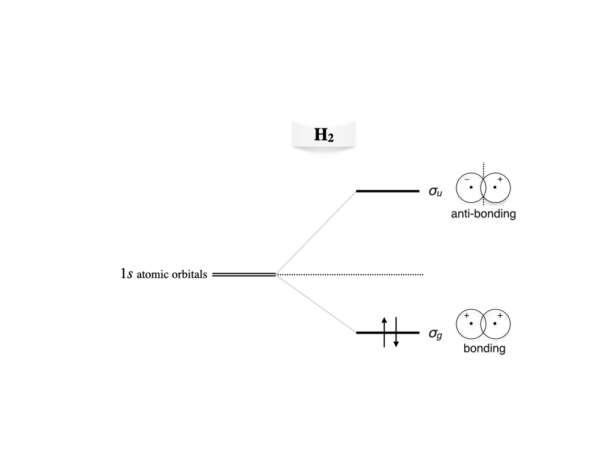
Figure 11.7: Molecular orbitals diagram for the hydrogen molecule.
As for the many-electron atoms, the Hartree–Fock method is just an approximation to the exact solution. The accurate theoretical value for the bond energy at the equilibrium distance, \(R_e=1.4\;a_0\), is \(-0.17447\;E_h\) (\(-458\text{ kJ/mol}\)). The variational result obtained with the wave function in eq. (11.13) is \(-0.12778\;E_h\) (\(-335\text{ kJ/mol}\)), which is about \(73 \%\) of the exact value. In this calculation, the exponent of the \(1s\) orbitals, \(c_0\) in \(\psi_{100}=\sqrt{\frac{c_0^3}{\pi}}\exp[-c_0r]\), is used as a variational parameter, exactly as we did for helium in chapter 9. Its optimal value at \(R_e\) is \(c_0=1.1695\), larger than \(1\): in the molecule, each electron feels the attraction of two nuclei, and the orbitals contract.
If we scan the Born–Oppenheimer potential energy curve with the wave function in eq. (11.13), as we did for \(\mathrm{H}_2^+\), we obtain the red curve in figure 11.8.
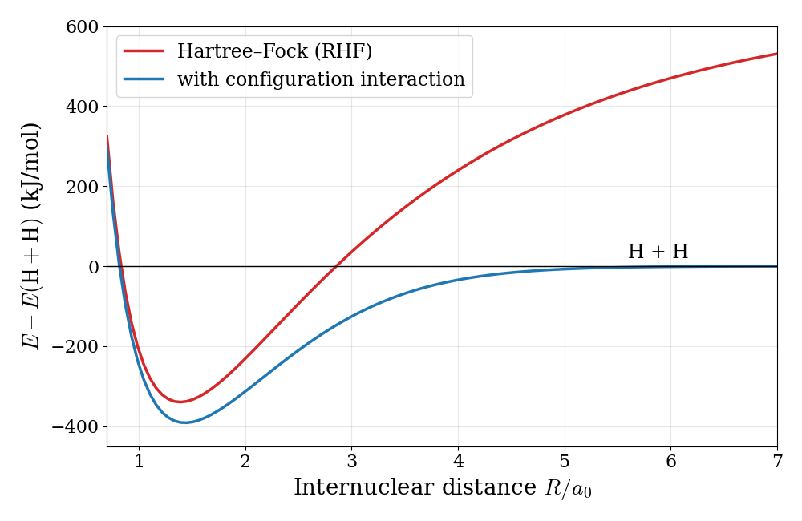
Figure 11.8: Born–Oppenheimer potential energy curves for the hydrogen molecule computed with the restricted Hartree–Fock wave function (red) and with configuration interaction (blue). Both calculations use a minimal basis of \(1s\) functions with the exponent optimized at each distance (approximated with three gaussian functions, so the numbers differ slightly from those in the text). Energies are measured from two separated hydrogen atoms.
The Hartree–Fock results for \(\mathrm{H}_2\) describe the formation of the bond qualitatively around the equilibrium distance (the minimum of the curve), but they fail completely at dissociation: instead of going to the energy of two hydrogen atoms, the curve keeps rising, and at large distances the molecule is predicted to be less stable than the separated atoms by hundreds of kJ/mol. To understand why, we can write the spatial part of eq. (11.13) in terms of the atomic orbitals:
\[\begin{equation} \begin{aligned} \sigma_{g}(\mathbf{r}_1)\sigma_{g}(\mathbf{r}_2) &= \frac{1}{2+2S}\left[a(1)+b(1)\right]\left[a(2)+b(2)\right] \\ &= \frac{1}{2+2S} \Big[ \underbrace{a(1)b(2)+b(1)a(2)}_{\text{covalent: } \mathrm{H}\!-\!\mathrm{H}} + \underbrace{a(1)a(2)+b(1)b(2)}_{\text{ionic: } \mathrm{H}^-\,\mathrm{H}^+ \text{ and } \mathrm{H}^+\,\mathrm{H}^-} \Big], \end{aligned} \tag{11.15} \end{equation}\]
where \(a(1)\) is short for \(a(\mathbf{r}_1)\), and so on. The first two terms describe one electron on each atom, the covalent picture of the bond. The last two terms describe both electrons on the same atom, i.e., an \(\mathrm{H}^-\) ion next to a bare proton. The RHF wave function always contains the two types of terms with the same weight, whatever the distance between the nuclei. Close to equilibrium this is not too bad, since the ionic terms give a reasonable description of the electrons being shared between the two nuclei. At dissociation, however, the correct answer is two neutral hydrogen atoms, and the ionic terms (which describe the much less stable \(\mathrm{H}^-+\mathrm{H}^+\) pair) should disappear completely. The RHF wave function cannot do that, and its energy at large distance is too high.
11.2.1 Beyond Hartree–Fock
This failure is not a failure of quantum mechanics, but of the approximation that we used: it is an extreme example of the electron correlation that we discussed in chapter 9. In the RHF wave function the two electrons are described by the same orbital and move independently of each other, so there is nothing that prevents them from being found on the same atom. In reality, when the two atoms are far apart, if one electron is on atom \(A\) the other is almost certainly on atom \(B\): their motions are strongly correlated.
We can fix the problem by mixing into the wave function a second Slater determinant, in which both electrons are described by the antibonding orbital, \(\sigma_u=\varphi_-\):
\[\begin{equation} \Psi_\text{CI} = c_1\, |\sigma_{g}\alpha\;\sigma_{g}\beta| + c_2\, |\sigma_{u}\alpha\;\sigma_{u}\beta|, \tag{11.16} \end{equation}\]
where the coefficients \(c_1\) and \(c_2\) are determined with the variational method. Expanding the spatial part of the second determinant as we did in eq. (11.15), we obtain \(\sigma_u(1)\sigma_u(2)\propto\left[a(1)a(2)+b(1)b(2)\right]-\left[a(1)b(2)+b(1)a(2)\right]\): the same ionic and covalent terms, but with opposite relative sign. By choosing \(c_2\) negative, we can therefore reduce the weight of the ionic terms. At equilibrium the variational method gives a small \(c_2\), while at dissociation it gives \(c_2=-c_1\), which removes the ionic terms completely and leaves the correct covalent wave function. The resulting potential energy curve is the blue curve in figure 11.8. It goes smoothly to the energy of two hydrogen atoms at dissociation, and it is also lower than the RHF curve near the minimum, since it recovers part of the correlation energy.
A wave function written as a linear combination of several Slater determinants, such as eq. (11.16), is called a configuration interaction (CI) wave function, and it is the simplest example of a correlated method. Modern quantum chemistry programs routinely use correlated methods to compute bond energies to within a few kJ/mol of the experimental values.
11.3 Homonuclear Diatomic Molecules of the Second Row
We can now use what we learned for \(\mathrm{H}_2^+\) and \(\mathrm{H}_2\) to understand the bonds formed by the atoms of the second row of the periodic table, from lithium to neon. Here we will not perform the calculations explicitly, but we will use the same ideas to build qualitative MO diagrams, which are one of the most powerful tools that chemists have to reason about bonding.
11.3.1 Building the molecular orbitals
Each second-row atom has a \(1s\) core and valence electrons, described by the \(2s\) and \(2p\) orbitals. As we saw in chapter 9, the core orbitals are very compact and very low in energy, so the \(1s\) orbitals of the two atoms barely overlap, and they combine into a bonding and an antibonding orbital, which together describe the four core electrons and have almost the same energy as the atomic orbitals. Their effects cancel out, and we can ignore them. The interesting chemistry happens in the valence shell, where each atom contributes four atomic orbitals, \(2s\), \(2p_x\), \(2p_y\), and \(2p_z\), for a total of eight. The LCAO method of chapter 10 would then give an \(8\times8\) secular determinant. Fortunately, we do not need to solve it to understand the results, because of two simple rules:
- Only orbitals with similar energies interact strongly. The difference between the energies of the atomic orbitals enters the solution of the secular determinant in the same way as \(H_{aa}\) did for \(\mathrm{H}_2^+\): the closer two atomic orbitals are in energy, the more they mix and the larger the splitting between the resulting bonding and antibonding orbitals.
- Only orbitals with the same symmetry with respect to the bond axis can interact. If we take the bond axis as \(z\), the \(2s\) and \(2p_z\) orbitals are symmetric with respect to rotations around the axis, and they form \(\sigma\) orbitals, as we saw for hydrogen. The \(2p_x\) and \(2p_y\) orbitals are perpendicular to the axis, and they change sign when we rotate the molecule by \(180^\circ\) around it. Their overlap with an orbital of \(\sigma\) symmetry is exactly zero (the positive and negative lobes cancel), so they form separate molecular orbitals, called \(\pi\) orbitals.
Using these two rules, the \(8\times8\) problem splits into smaller pieces. To a first approximation, the two \(2s\) orbitals combine into a bonding \(\sigma_g 2s\) and an antibonding \(\sigma_u^* 2s\) orbital, exactly as the \(1s\) orbitals did in \(\mathrm{H}_2\). The two \(2p_z\) orbitals, which point towards each other, combine into a bonding \(\sigma_g 2p\) and an antibonding \(\sigma_u^* 2p\) orbital. Finally, the \(2p_x\) orbitals on the two atoms combine side by side into a bonding \(\pi_u 2p\) and an antibonding \(\pi_g^* 2p\) orbital, and the same happens for the \(2p_y\) orbitals. The two \(\pi_u\) orbitals (one from \(p_x\) and one from \(p_y\)) have the same energy, and so do the two \(\pi_g^*\) orbitals. (The asterisk is a common way of marking antibonding orbitals.) The orbitals formed by the \(2p\) functions are plotted in figure 11.9.
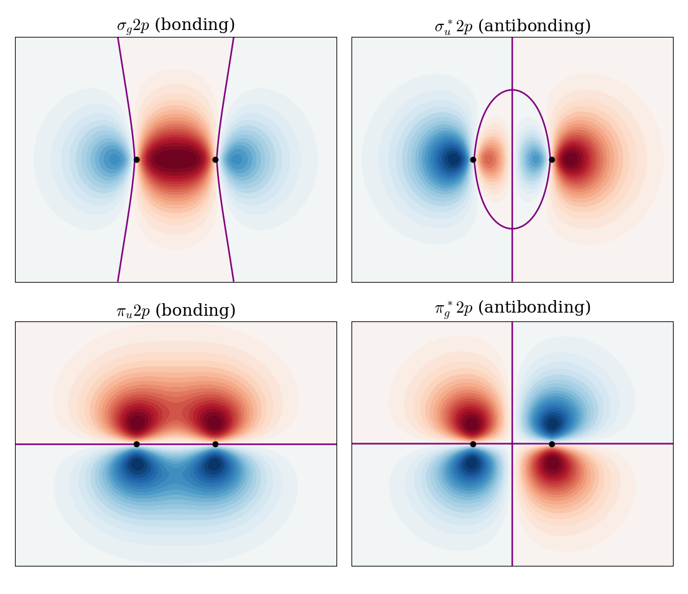
Figure 11.9: Color maps of the molecular orbitals formed by the \(2p\) atomic orbitals in a homonuclear diatomic molecule, in a plane that contains the two nuclei (black dots, bond axis horizontal). Color scheme: red (positive), blue (negative). Nodal surfaces are reported in purple.
A few important considerations can be made by analyzing these orbitals:
\(\sigma\) versus \(\pi\) overlap: the \(2p_z\) orbitals point directly at each other and overlap strongly along the bond axis. The \(2p_x\) orbitals overlap side by side, above and below the axis, and their overlap is smaller. As a consequence, the splitting between \(\pi_u\) and \(\pi_g^*\) is usually smaller than the splitting between \(\sigma_g 2p\) and \(\sigma_u^* 2p\).
Nodes: as always, the antibonding orbitals have an extra nodal plane perpendicular to the bond axis, halfway between the nuclei. The \(\pi\) orbitals also have a nodal plane that contains the bond axis, so the electrons in a \(\pi\) bond are found above and below the axis, never on it.
Symmetry labels: if we invert the \(\pi\) bonding orbital through the center of the molecule, the upper positive lobe goes into the lower negative lobe, so the orbital changes sign and is labeled \(u\). The \(\pi\) antibonding orbital, instead, does not change sign, and is labeled \(g\). Notice that this is the opposite of what happens for \(\sigma\) orbitals, where the bonding orbital is \(g\) and the antibonding one is \(u\).
11.3.2 Molecular orbital diagrams of N\(_2\) and O\(_2\)
Once we know the molecular orbitals and their approximate order, we can use them to describe the valence electrons of the molecule, at most two electrons (with opposite spins) for each orbital, starting from the lowest, and following the Pauli exclusion principle as we did for many-electron atoms. The resulting MO diagrams for \(\mathrm{N}_2\) (10 valence electrons) and \(\mathrm{O}_2\) (12 valence electrons) are shown in figure 11.10.
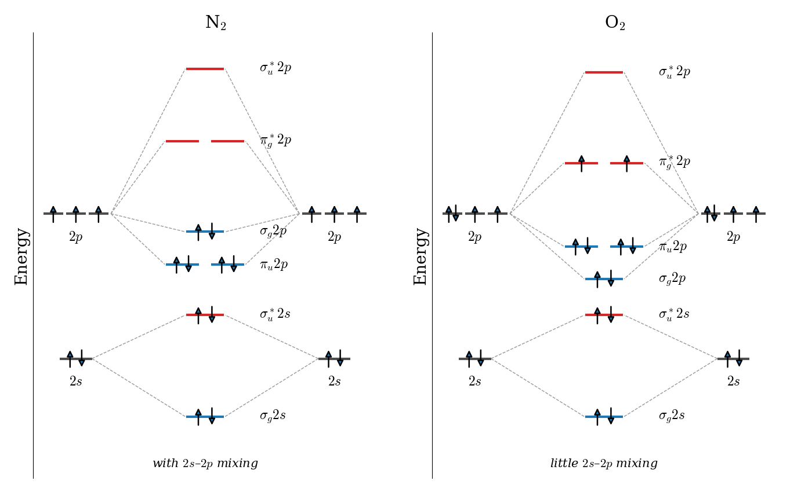
Figure 11.10: Qualitative valence molecular orbital diagrams of N\(_2\) (left) and O\(_2\) (right). The atomic orbitals of the two atoms are on the sides, and the molecular orbitals in the middle (blue: bonding, red: antibonding). The \(1s\) core orbitals are not shown.
The two diagrams are not identical: in \(\mathrm{N}_2\) the \(\pi_u 2p\) orbitals are below the \(\sigma_g 2p\) orbital, while in \(\mathrm{O}_2\) the order is reversed. The reason is a mixing between the \(2s\) and \(2p_z\) orbitals, which we neglected in the simple picture above. The \(\sigma_g 2s\) and \(\sigma_g 2p\) orbitals have the same symmetry, so, according to the second rule, they can interact. When they do, the lower orbital is pushed further down, and the upper one, \(\sigma_g 2p\), is pushed up, above the \(\pi_u 2p\) orbitals. According to the first rule, this mixing is important only if the \(2s\) and \(2p\) atomic orbitals are close in energy. As we saw in chapter 9, the \(2s\) orbitals are lower than the \(2p\) orbitals because they penetrate the core. This effect grows across the row, as the nuclear charge increases (see the difference between \(Z_\text{eff}(2s)\) and \(Z_\text{eff}(2p)\) in table 9.1, multiplied by the larger charges). For the first part of the row (from \(\mathrm{Li}_2\) to \(\mathrm{N}_2\)), the \(2s\)–\(2p\) gap is small, the mixing is strong, and \(\pi_u 2p\) is below \(\sigma_g 2p\). For \(\mathrm{O}_2\) and \(\mathrm{F}_2\), the gap is large, the mixing is small, and \(\sigma_g 2p\) is the lower of the two. This change in order is confirmed experimentally by photoelectron spectroscopy, which measures the energies needed to remove electrons from each orbital.
11.3.3 Bond order and magnetic properties
A simple way of summarizing an MO diagram is the bond order:
\[\begin{equation} \text{bond order} = \frac{1}{2}\left(n_\text{bonding} - n_\text{antibonding}\right), \tag{11.17} \end{equation}\]
where \(n_\text{bonding}\) and \(n_\text{antibonding}\) are the numbers of electrons described by bonding and antibonding orbitals, respectively. Since each electron described by a bonding orbital stabilizes the molecule and each electron described by an antibonding orbital destabilizes it by a similar (slightly larger) amount, the bond order measures the net number of bonds between the two atoms. For \(\mathrm{H}_2\) it is \(\frac{1}{2}(2-0)=1\), a single bond. From figure 11.10 we obtain:
- \(\mathrm{N}_2\): 8 electrons described by bonding orbitals (\(\sigma_g 2s\), \(\pi_u 2p\), \(\sigma_g 2p\)) and 2 by antibonding orbitals (\(\sigma_u^* 2s\)), so the bond order is \(\frac{1}{2}(8-2)=3\). This is the triple bond of the Lewis structure, \(\mathrm{N}\equiv\mathrm{N}\), made of one \(\sigma\) and two \(\pi\) bonds.
- \(\mathrm{O}_2\): 8 electrons described by bonding orbitals and 4 by antibonding orbitals (\(\sigma_u^* 2s\) and \(\pi_g^* 2p\)), so the bond order is \(\frac{1}{2}(8-4)=2\), the double bond of the Lewis structure, \(\mathrm{O}=\mathrm{O}\).
So far, the MO diagrams agree with the Lewis structures. The most interesting difference is in the last two electrons of \(\mathrm{O}_2\). They are described by two orbitals with exactly the same energy, the two \(\pi_g^*\) orbitals, and there are two ways of doing so: using the same orbital for both electrons, with opposite spins, or a different orbital for each electron. As for the many-electron atoms (where this is known as Hund’s rule), the lowest energy is obtained by describing the two electrons with different orbitals, with parallel spins. Electrons described by different orbitals are, on average, farther apart and repel each other less, and electrons with the same spin are kept even farther apart by the antisymmetry of the wave function, which is the origin of the exchange term that we saw in the Fock operator in chapter 10. Molecular oxygen, therefore, has two unpaired electrons. Since each unpaired electron behaves like a tiny magnet (chapter 7), the molecule is attracted by a magnetic field: it is paramagnetic. This can be seen in a classic demonstration, in which liquid oxygen poured between the poles of a strong magnet stays suspended between them, while liquid nitrogen, which has no unpaired electrons (it is diamagnetic), flows straight through. The Lewis structure of \(\mathrm{O}_2\), which pairs all electrons, cannot explain this behavior, while the MO diagram predicts it naturally. This was one of the earliest and most convincing successes of molecular orbital theory.
The same procedure can be applied to all the homonuclear diatomic molecules of the second row, and the results are summarized in table 11.1.
| Molecule | Valence electrons | Bond order | Unpaired electrons | Bond length (pm) | Bond energy (kJ/mol) |
|---|---|---|---|---|---|
| Li\(_2\) | 2 | 1 | 0 | 267 | 105 |
| Be\(_2\) | 4 | 0 | 0 | — | ~10 |
| B\(_2\) | 6 | 1 | 2 | 159 | 289 |
| C\(_2\) | 8 | 2 | 0 | 124 | 599 |
| N\(_2\) | 10 | 3 | 0 | 110 | 942 |
| O\(_2\) | 12 | 2 | 2 | 121 | 494 |
| F\(_2\) | 14 | 1 | 0 | 142 | 154 |
| Ne\(_2\) | 16 | 0 | 0 | — | ~0 |
Notice how the experimental data follow the predicted bond orders: as the bond order increases from \(\mathrm{Li}_2\) to \(\mathrm{N}_2\), the bonds get shorter and stronger, and as it decreases from \(\mathrm{N}_2\) to \(\mathrm{F}_2\), they get longer and weaker. The molecules with a bond order of zero, \(\mathrm{Be}_2\) and \(\mathrm{Ne}_2\), are not chemically bound (they exist only as extremely weak van der Waals complexes at very low temperatures). Notice also that MO theory correctly predicts that \(\mathrm{B}_2\), like \(\mathrm{O}_2\), is paramagnetic: because of the \(2s\)–\(2p\) mixing, its last two electrons are described by the two degenerate \(\pi_u\) orbitals, with parallel spins.
11.4 Heteronuclear Diatomic Molecules
When the two atoms of a diatomic molecule are different, the two rules that we used to build the molecular orbitals still apply, but with an important difference: the atomic orbitals of the two atoms no longer have the same energy. Recall from chapter 9 that the energy of an atomic orbital depends on the effective nuclear charge, which increases across a row of the periodic table. Orbitals of more electronegative atoms are therefore lower in energy. This has two consequences, which we can understand by going back to the \(2\times2\) secular determinant of \(\mathrm{H}_2^+\), with \(H_{aa}\neq H_{bb}\):
- Smaller splitting. The larger the energy difference between the two atomic orbitals, the less they mix, and the smaller the stabilization of the bonding orbital. Orbitals that are very far apart in energy do not mix at all, even if they have the same symmetry.
- Unequal sharing. The bonding orbital is closer in energy to the lower atomic orbital, and it has a larger coefficient on the more electronegative atom. The antibonding orbital, instead, resembles the higher atomic orbital, and it is concentrated on the less electronegative atom. In other words, an electron described by the bonding orbital is more likely to be found near the more electronegative atom: the bond is polar.
These ideas are illustrated by the MO diagrams of hydrogen fluoride and carbon monoxide in figure 11.11.
![Two molecular orbital diagrams. Left, HF: the hydrogen 1s level at minus 13.6 eV on the left and the much lower fluorine 2s and 2p levels on the right. The fluorine 2s and two of the 2p orbitals remain nonbonding; the hydrogen 1s and fluorine 2p z combine into a bonding 3 sigma orbital close to the fluorine level and an antibonding 4 sigma orbital close to the hydrogen level. Right, CO: carbon levels on the left are higher than oxygen levels on the right; the occupied orbitals 3 sigma, 4 sigma, and 1 pi lie closer to the oxygen levels, the highest occupied 5 sigma orbital is a carbon lone pair, and the lowest unoccupied orbital, 2 pi star, lies closer to the carbon levels.](img/MO_HF_CO.png)
Figure 11.11: Qualitative valence molecular orbital diagrams of HF (left) and CO (right). The atomic levels are placed at the approximate energies of the valence atomic orbitals, and the occupied molecular orbitals of CO at the negative of the experimental ionization energies (blue: bonding, red: antibonding, black: nonbonding).
Hydrogen fluoride. The \(1s\) orbital of hydrogen (\(-13.6\;\text{eV}\)) is much higher in energy than the valence orbitals of fluorine, whose large effective nuclear charge pulls the \(2s\) orbital down to about \(-40\;\text{eV}\) and the \(2p\) orbitals to about \(-19\;\text{eV}\). By symmetry, the hydrogen \(1s\) orbital can only combine with the fluorine orbitals of \(\sigma\) symmetry, \(2s\) and \(2p_z\), and the \(2s\) is too low in energy to mix significantly. The bond is therefore formed by the hydrogen \(1s\) and the fluorine \(2p_z\) orbitals, which give a bonding orbital (\(3\sigma\)) much closer to the fluorine level, and therefore mostly localized on fluorine, and an antibonding orbital (\(4\sigma^*\)) mostly localized on hydrogen. The fluorine \(2s\) (\(2\sigma\)) and the two fluorine \(2p\) orbitals perpendicular to the bond (\(1\pi\)) have no partner on hydrogen, and they remain nonbonding: they are the three lone pairs of the Lewis structure of HF. The eight valence electrons are described by \(2\sigma\), \(3\sigma\), and \(1\pi\), so the bond order is \(\frac{1}{2}(2-0)=1\), a single bond. Since the two bonding electrons are found mostly near fluorine, the molecule has a large dipole moment (\(1.83\;\text{D}\)), with the negative end on fluorine.
Carbon monoxide. CO has the same number of valence electrons as \(\mathrm{N}_2\) (it is isoelectronic with it), and its MO diagram looks similar: the bond order is \(\frac{1}{2}(8-2)=3\), a triple bond, and CO is, in fact, one of the strongest bonds known (\(1{,}072\;\text{kJ/mol}\)). The orbitals of oxygen are lower in energy than those of carbon, so the bonding orbitals (\(3\sigma\), \(4\sigma\), and \(1\pi\)) are concentrated on oxygen, and the antibonding orbitals on carbon. Two orbitals deserve special attention, since they control the chemistry of CO. They are shown in figure 11.12.
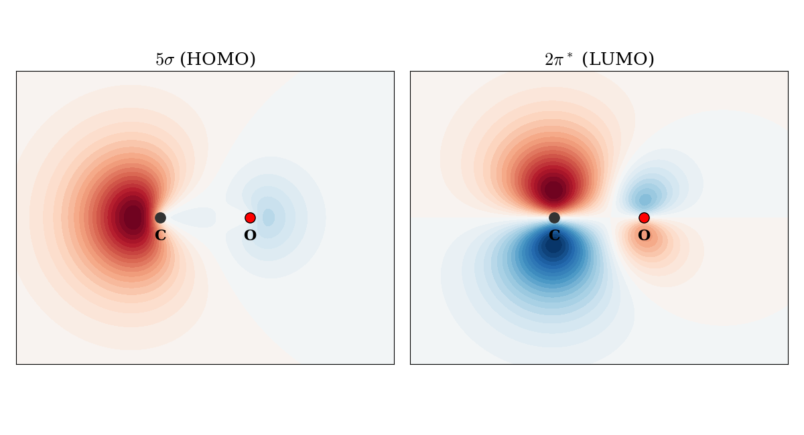
Figure 11.12: Schematic color maps of the frontier orbitals of CO, in a plane that contains the bond axis (red: positive, blue: negative). Left: the highest occupied orbital, \(5\sigma\), is a lone pair on carbon pointing away from oxygen. Right: the lowest unoccupied orbital, \(2\pi^*\), has its largest lobes on carbon. The maps are drawn from simple combinations of atomic orbitals and are meant to show the qualitative shape only.
- The HOMO (\(5\sigma\)) is mostly a carbon orbital, a combination of carbon \(2s\) and \(2p_z\) that points away from the oxygen atom. It is essentially a lone pair on carbon, the same lone pair that appears in the Lewis structure \(:\mathrm{C}\equiv\mathrm{O}:\).
- The LUMO (\(2\pi^*\)) is a pair of antibonding \(\pi\) orbitals, which, as the antibonding orbitals of a polar bond, have their largest lobes on carbon.
These two orbitals explain why CO binds to metal atoms through carbon, and not through the more electronegative oxygen. In metal carbonyls, such as \(\mathrm{Ni(CO)_4}\), and in the binding of CO to the iron atom of hemoglobin (which is why CO is so toxic), the carbon lone pair donates electron density to an empty orbital on the metal (\(\sigma\) donation), while filled \(d\) orbitals of the metal donate electron density back into the \(2\pi^*\) orbitals of CO (\(\pi\) back-donation). Both interactions involve orbitals that are concentrated on carbon, so carbon is the end that binds. The back-donation also weakens the C–O bond, since it adds electron density to an antibonding orbital, which is observed experimentally as a lower C–O vibrational frequency in metal carbonyls (around \(2{,}000\;\text{cm}^{-1}\)) than in free CO (\(2{,}143\;\text{cm}^{-1}\), chapter 13).
The MO picture also explains a famous puzzle: despite the much larger electronegativity of oxygen, the dipole moment of CO is very small (\(0.11\;\text{D}\)), and its negative end is on carbon. The polarization of the bonding orbitals towards oxygen is almost exactly compensated by the carbon lone pair (\(5\sigma\)), which places electron density on the outer side of the carbon atom.
These qualitative MO diagrams are the starting point of molecular orbital theory, but they only work so well for diatomic molecules. For a molecule with more than two atoms, such as water, we cannot easily guess the order and shape of the molecular orbitals, and we need to solve the Hartree–Fock equations explicitly, as we will do in the next chapter.
11.5 Chapter Review
11.5.1 Study Questions
1. In the H\(_2^+\) treatment, which one‑electron molecular Hamiltonian (in atomic units, and using the Born–Oppenheimer approximation) is used?
- \(\hat{H} = -\tfrac{1}{2}\nabla^2 - \dfrac{1}{r_a}\)
- \(\hat{H} = -\tfrac{1}{2}\nabla^2 - \dfrac{1}{r_b}\)
- \(\hat{H} = -\tfrac{1}{2}\nabla^2 - \dfrac{1}{r_a} - \dfrac{1}{r_b}\)
- \(\hat{H} = -\tfrac{1}{2}\nabla^2 + \dfrac{1}{r_a} + \dfrac{1}{r_b}\)
- \(\hat{H} = -\nabla^2 + \dfrac{1}{r_a r_b}\)
2. Which of the following is used as the first variational ansatz for the one‑electron molecular orbital in H\(_2^+\)?
- \(\varphi = a\)
- \(\varphi = b\)
- \(\varphi = a b\)
- \(\varphi = c_1 a + c_2 b\)
- \(\varphi = a^2 + b^2\)
3. In the secular problem for H\(_2^+\), what is the physical meaning of the overlap integral \(S = S_{ab}\)?
- integral \(\int a(\mathbf{r}) b(\mathbf{r}) d\mathbf{r}\) measuring non‑orthogonality of the two 1s orbitals
- nuclear repulsion between the two protons
- kinetic energy between \(a\) and \(b\)
- electron–electron repulsion
- spin overlap between alpha and beta functions
4. The diagonalization of the 2×2 secular problem for H\(_2^+\) gives which types of molecular orbitals?
- a nonbonding and an antinonbonding orbital
- a bonding \(\varphi_+\) and an antibonding \(\varphi_-\) combination
- two identical orbitals with the same energy
- two core orbitals localized on each nucleus
- two purely antibonding orbitals
5. What is the physical meaning of the negative total energy of the ground state for a range of \(R\) in H\(_2^+\)?
- the molecular ion is unstable relative to separated H + H\(^+\)
- the molecular orbital stabilizes the system relative to the separated fragments
- electron–nuclear attraction is negligible
- only nuclear–nuclear repulsion matters
- there is no chemical bond
6. Which of the following is the correct molecular Hamiltonian, in a.u. and under the Born–Oppenheimer approximation, for H\(_2\)?
- \(\hat{h}_1 + \hat{h}_2\) only
- \(\hat{h}_1 + \hat{h}_2 - 1/r_{12}\)
- \(\hat{k}_n + \hat{k}_e\) only
- \(1/r_{12} + 1/R\) only
- \(\hat{h}_1 + \hat{h}_2 + 1/r_{12} + 1/R\)
7. For the ground state of H\(_2\) in the minimal MO picture used in this chapter, how are the two electrons described?
- one electron described by \(\varphi_+\) and one by \(\varphi_-\), with parallel spins
- both electrons described by the antibonding MO \(\varphi_-\), with opposite spin
- one electron described by \(\sigma_g\), and one by a core orbital
- both electrons described by the bonding MO \(\sigma_g = \varphi_+\), with opposite spin
- both electrons described by a localized atomic orbital on a single nucleus
8. Why does the RHF‑type description of H\(_2\) fail at large H–H separations (dissociation limit)?
- it breaks spin symmetry
- it forces both electrons to be described by the same delocalized orbital shared between centers, rather than localizing one electron on each atom
- it neglects nuclear repulsion
- it neglects electron kinetic energy
- it overestimates overlap as \(S=1\)
9. What is the main qualitative effect of including electron–electron repulsion and better correlation methods beyond the simple Hartree–Fock picture in H\(_2\)?
- they destroy the bond minimum
- they describe both electrons with antibonding orbitals
- they improve the description of the potential‑energy curve, particularly the dissociation region
- they eliminate spin considerations
- they make the electrons behave classically
10. Comparing H\(_2^+\) and H\(_2\), which statement about their bonding descriptions is true?
- both are one‑electron systems with identical Hamiltonians
- H\(_2^+\) is exactly solvable analytically while H\(_2\) is not
- H\(_2^+\) has one‑electron bonding described by a single MO; H\(_2\) requires a two‑electron antisymmetric wave function including spin
- H\(_2^+\) has no bound state
- H\(_2\) can be described without consideration of spin
11. According to the MO diagram of O\(_2\), what are its bond order and the number of unpaired electrons?
- bond order 2, no unpaired electrons
- bond order 2, two unpaired electrons
- bond order 3, no unpaired electrons
- bond order 1, two unpaired electrons
- bond order 2.5, one unpaired electron
12. Why is the \(\sigma_g 2p\) orbital above the \(\pi_u 2p\) orbitals in N\(_2\), but below them in O\(_2\)?
- because N\(_2\) has a triple bond
- because the \(2p\) orbitals of nitrogen are not degenerate
- because the \(2s\) and \(2p\) orbitals of nitrogen are closer in energy, so the \(\sigma_g\) orbitals from \(2s\) and \(2p\) mix more strongly
- because O\(_2\) is paramagnetic
- because \(\pi\) orbitals always overlap more than \(\sigma\) orbitals
13. In the HF molecule, why are the two \(1\pi\) orbitals nonbonding?
- because they have the wrong energy to mix with the fluorine \(2s\)
- because there is no orbital of \(\pi\) symmetry on hydrogen to combine with them
- because they are antibonding
- because hydrogen has no electrons
- because the bond in HF is ionic
14. Why does carbon monoxide bind to metal atoms through carbon rather than through oxygen?
- because carbon is more electronegative than oxygen
- because the HOMO (\(5\sigma\)) is a lone pair on carbon and the LUMO (\(2\pi^*\)) is concentrated on carbon
- because the bonding orbitals of CO are concentrated on carbon
- because oxygen has no lone pairs in CO
- because the C–O bond order is 2